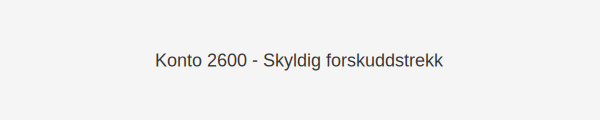

Konto 2600 - Skyldig forskuddstrekk er en konto i Norsk Standard Kontoplan som brukes til å registrere skyldig forskuddstrekk på lønn og andre ytelser som en del av kortsiktig gjeld.

Hva er skyldig forskuddstrekk?
Skyldig forskuddstrekk er den delen av ansattes lønn som arbeidsgiver har trukket fra brutto lønn og skal innbetales til skattemyndighetene. Konto 2600 gjenspeiler denne forpliktelsen frem til betaling.
Nøkkelfunksjoner
| Egenskap | Beskrivelse |
|---|---|
| Kontonummer | 2600 |
| Konto | Skyldig forskuddstrekk |
| Kontotype | Kortsiktig gjeld |
| Formål | Registrere trukket forskuddstrekk fra lønn |
Når bruker man konto 2600?
- Ved lønnskjøring der arbeidsgiver trekker forskuddstrekk fra ansattes lønn
- Når forskuddstrekk skal periodiseres som kortsiktig gjeld i balansen
- Ved rapportering og avstemming av skattetrekkskonto
Forskjell mellom 2600 og tilgrensede kontoer
| Konto | Formål | Type gjeld |
|---|---|---|
| 2600 | Skyldig forskuddstrekk | Kortsiktig gjeld |
| 1950 | Bankinnskudd for skattetrekk | Omløpsmiddel |
| 2500 | Betalbar skatt, ikke utlignet | Kortsiktig gjeld |
| 2510 | Betalbar skatt, utlignet | Kortsiktig gjeld |
Regnskapsføring av forskuddstrekk
1. Ved lønnskjøring
Debet: [Konto 5000 - Lønn til ansatte](/blogs/kontoplan/5000-lonn-til-ansatte "Konto 5000 - Lønn til ansatte") XXX NOK
Kredit: Konto 2600 - Skyldig forskuddstrekk XXX NOK
2. Ved betaling til Skatteetaten
Debet: Konto 2600 - Skyldig forskuddstrekk YYY NOK
Kredit: Konto 1950 - Bankinnskudd for skattetrekk YYY NOK
Avstemming av forskuddstrekk
For å sikre korrekt regnskapsrapportering bør man regelmessig avstemme saldoen på konto 2600 mot bankutskrifter og lønnssystemets beregninger.
Praktiske tips
- Sett opp automatiske varsler i lønnssystemet for forskuddstrekk
- Avstem konto 2600 månedlig for å oppdage avvik tidlig
- Koordiner betalinger med bank for å unngå renter og gebyrer
- Oppdater interne rutiner ved endringer i skattekort eller skattesatser
Intern lenking og relaterte kontoer
- Konto 2930 - Lønn
- Konto 7770 - Bank og kortgebyrer
- Konto 1950 - Bankinnskudd for skattetrekk
- Konto 2500 - Betalbar skatt, ikke utlignet
- Konto 2510 - Betalbar skatt, utlignet
- Konto 2530 - Refusjon skatt etter Skatteloven §31 5. ledd
- Konto 2540 - Forhåndsskatt
- Konto 2610 - Påleggstrekk
- Konto 2620 - Bidragstrekk
- Konto 2630 - Trygdetrekk
- Konto 2770 - Skyldig arbeidsgiveravgift
- Konto 2640 - Forsikringstrekk
- Konto 2650 - Trukket fagforeningskontingent
- Hva er en Kontoplan?
Konto 2600 - Skyldig forskuddstrekk gir oversikt over forskuddstrekk trukket fra lønn og sikrer korrekt periodisering og presentasjon som kortsiktig gjeld i balansen.